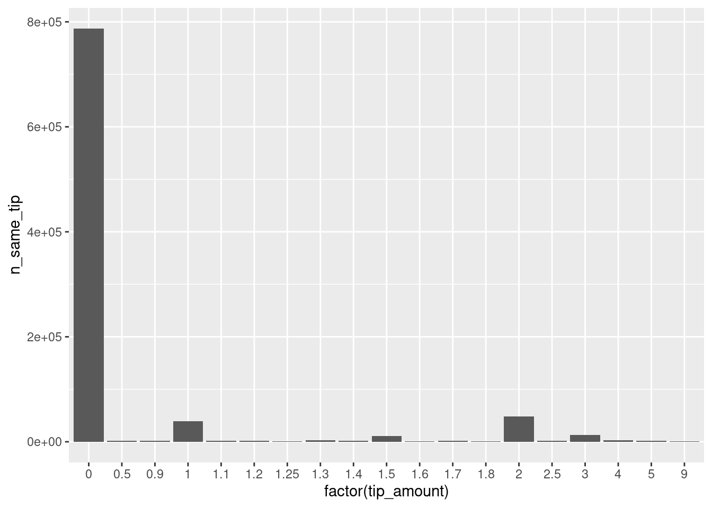

Chapter 10 Descriptive Statistics and Aggregation
10.1 Data aggregation: The ‘split-apply-combine’ strategy
The ‘split-apply-combine’ strategy plays an important role in many data analysis tasks, ranging from data preparation to summary statistics and model-fitting.57 The strategy can be defined as “break up a problem into manageable pieces, operate on each piece independently, and then put all the pieces back together.” (Wickham 2011, 1)
Many R users are familiar with the basic concept of split-apply-combine implemented in the plyr package intended for normal in-memory operations (dataset fits into RAM). Here, we explore the options for split-apply-combine approaches to large datasets that do not fit into RAM.
10.2 Data aggregation with chunked data files
In this tutorial we explore the world of New York’s famous Yellow Cabs. In in a first step, we will focus on the ff-based approach to employ parts of the hard disk as ‘virtual memory’. This means, all of the examples are easily scalable without risking too much memory pressure. Given the size of the entire TLC database (over 200GB), we will only use one million taxi trip records.58
Data import
First, we read the raw taxi trip records into R with the ff package.
# load packages
library(ff)
library(ffbase)
# set up the ff directory (for data file chunks)
if (!dir.exists("fftaxi")){
system("mkdir fftaxi")
}
options(fftempdir = "fftaxi")
# import the first one million observations
taxi <- read.table.ffdf(file = "data/tlc_trips.csv",
sep = ",",
header = TRUE,
next.rows = 100000,
# colClasses= col_classes,
nrows = 1000000
)Following the data documentation provided by TLC, we give the columns of our dataset more meaningful names and remove the empty columns (some covariates are only collected in later years).
When inspecting the factor variables of the dataset, we notice that some of the values are not standardized/normalized, and the resulting factor levels are, therefore, somewhat ambiguous. We should clean this before getting into data aggregation tasks. Note the ff-specific syntax needed to recode the factor.
# inspect the factor levels
levels(taxi$Payment_Type)## [1] "Cash" "CASH" "Credit" "CREDIT"
## [5] "Dispute" "No Charge"# recode them
levels(taxi$Payment_Type) <- tolower(levels(taxi$Payment_Type))
taxi$Payment_Type <- ff(taxi$Payment_Type,
levels = unique(levels(taxi$Payment_Type)),
ramclass = "factor")
# check result
levels(taxi$Payment_Type)## [1] "cash" "credit" "dispute" "no charge"Aggregation with split-apply-combine
First, we will have a look at whether trips paid with credit card tend to involve lower tip amounts than trips paid by cash. In order to do so, we create a table that shows the average amount of tip paid for each payment-type category.
In simple words, this means we first split the dataset into subsets, each of which contains all observations belonging to a distinct payment type. Then, we compute the arithmetic mean of the tip-column of each of these subsets. Finally, we combine all of these results into one table (i.e., the split-apply-combine strategy). When working with ff, the ffdfply() function in combination with the doBy package (Højsgaard and Halekoh 2023) provides a user-friendly implementation of split-apply-combine types of tasks.
# load packages
library(doBy)
# split-apply-combine procedure on data file chunks
tip_pcategory <- ffdfdply(taxi,
split = taxi$Payment_Type,
BATCHBYTES = 100000000,
FUN = function(x) {
summaryBy(Tip_Amt~Payment_Type,
data = x,
FUN = mean,
na.rm = TRUE)})Note how the output describes the procedure step by step. Now we can have a look at the resulting summary statistic in the form of a data.frame.
as.data.frame(tip_pcategory)## Payment_Type Tip_Amt.mean
## 1 cash 0.0008162
## 2 credit 2.1619737
## 3 dispute 0.0035075
## 4 no charge 0.0041056The result contradicts against our initial hypothesis. However, the comparison is a little flawed. If trips paid by credit card also tend to be longer, the result is not too surprising. We should thus look at the share of tip (or percentage), given the overall amount paid for the trip.
We add an additional variable percent_tip and then repeat the aggregation exercise for this variable.
# add additional column with the share of tip
taxi$percent_tip <- (taxi$Tip_Amt/taxi$Total_Amt)*100
# recompute the aggregate stats
tip_pcategory <- ffdfdply(taxi,
split = taxi$Payment_Type,
BATCHBYTES = 100000000,
FUN = function(x) {
# note the difference here
summaryBy(percent_tip~Payment_Type,
data = x,
FUN = mean,
na.rm = TRUE)})
# show result as data frame
as.data.frame(tip_pcategory)## Payment_Type percent_tip.mean
## 1 cash 0.005978
## 2 credit 16.004173
## 3 dispute 0.045660
## 4 no charge 0.040433Cross-tabulation of ff vectors
Also in relative terms, trips paid by credit card tend to be tipped more. However, are there actually many trips paid by credit card? In order to figure this out, we count the number of trips per payment type by applying the table.ff function provided in ffbase.
table.ff(taxi$Payment_Type)##
## cash credit dispute no charge
## 781295 215424 536 2745So trips paid in cash are way more frequent than trips paid by credit card. Again using the table.ff function, we investigate what factors might be correlated with payment types. First, we have a look at whether payment type is associated with the number of passengers in a trip.
# select the subset of observations only containing trips paid by
# credit card or cash
taxi_sub <- subset.ffdf(taxi, Payment_Type=="credit" | Payment_Type == "cash")
taxi_sub$Payment_Type <- ff(taxi_sub$Payment_Type,
levels = c("credit", "cash"),
ramclass = "factor")
# compute the cross tabulation
crosstab <- table.ff(taxi_sub$Passenger_Count,
taxi_sub$Payment_Type
)
# add names to the margins
names(dimnames(crosstab)) <- c("Passenger count", "Payment type")
# show result
crosstab## Payment type
## Passenger count credit cash
## 0 2 44
## 1 149990 516828
## 2 32891 133468
## 3 7847 36439
## 4 2909 17901
## 5 20688 73027
## 6 1097 3588From the raw numbers it is hard to see whether there are significant differences between the categories cash and credit. We therefore use a visualization technique called a ‘mosaic plot’ (provided in the vcd package; see Meyer, Zeileis, and Hornik (2023), Meyer, Zeileis, and Hornik (2006), and Zeileis, Meyer, and Hornik (2007)) to visualize the cross-tabulation.
# install.packages(vcd)
# load package for mosaic plot
library(vcd)
# generate a mosaic plot
mosaic(crosstab, shade = TRUE)
The plot suggests that trips involving more than one passenger tend to be paid by cash rather than by credit card.
10.3 High-speed in-memory data aggregation with arrow
For large datasets that (at least in part) fit into RAM, the arrow package again provides an attractive alternative to ff.
Data import
We use the already familiar read_csv_arrow() to import the same first million observations from the taxi trips records.
# load packages
library(arrow)
library(dplyr)
# read the CSV file
taxi <- read_csv_arrow("data/tlc_trips.csv",
as_data_frame = FALSE)Data preparation and ‘split-apply-combine’
We prepare/clean the data as in the ff-approach above.
As arrow builds on a dplyr backend, basic computations can be easily done through the common dplyr syntax. Note, however, that not all of the dplyr functions are covered in arrow (as of the writing of this book).59
# clean the categorical variable; aggregate by group
taxi <-
taxi %>%
mutate(Payment_Type = tolower(Payment_Type))taxi_summary <-
taxi %>%
mutate(percent_tip = (Tip_Amt/Total_Amt)*100 ) %>%
group_by(Payment_Type) %>%
summarize(avg_percent_tip = mean(percent_tip)) %>%
collect() Similarly, we can use data.table’s dcast() for cross-tabulation-like operations.
library(tidyr)
# compute the frequencies; pull result into R
ct <- taxi %>%
filter(Payment_Type %in% c("credit", "cash")) %>%
group_by(Passenger_Count, Payment_Type) %>%
summarize(n=n())%>%
collect()
# present as cross-tabulation
pivot_wider(data=ct,
names_from="Passenger_Count",
values_from = "n")## # A tibble: 2 × 11
## Payment_Type `5` `1` `6` `3` `4` `2`
## <chr> <int> <int> <int> <int> <int> <int>
## 1 cash 1.89e6 1.42e7 96920 972341 473783 3.57e6
## 2 credit 5.63e5 4.34e6 28853 221648 82800 9.23e5
## # … with 4 more variables: `0` <int>, `208` <int>,
## # `113` <int>, `129` <int>10.4 High-speed in-memory data aggregation with data.table
For large datasets that still fit into RAM, the data.table package (Dowle and Srinivasan 2022) provides very fast and elegant functions to compute aggregate statistics.
Data import
We use the already familiar fread() to import the same first million observations from the taxi trip records.
# load packages
library(data.table)
# import data into RAM (needs around 200MB)
taxi <- fread("data/tlc_trips.csv",
nrows = 1000000)Data preparation and data.table syntax for ‘split-apply-combine’
We prepare/clean the data as in the ff approach above.
# clean the factor levels
taxi$Payment_Type <- tolower(taxi$Payment_Type)
taxi$Payment_Type <- factor(taxi$Payment_Type,
levels = unique(taxi$Payment_Type)) Note the simpler syntax of essentially doing the same thing, but all in-memory.
data.table-syntax for ‘split-apply-combine’ operations
With the []-syntax we index/subset the usual data.frame objects in R. When working with data.tables, much more can be done in the step of ‘sub-setting’ the frame.60
For example, we can directly compute on columns.
taxi[, mean(Tip_Amt/Total_Amt)]## [1] 0.03452Moreover, in the same step, we can ‘split’ the rows by specific groups and apply the function to each subset.
taxi[, .(percent_tip = mean((Tip_Amt/Total_Amt)*100)), by = Payment_Type]## Payment_Type percent_tip
## 1: cash 0.005978
## 2: credit 16.004173
## 3: no charge 0.040433
## 4: dispute 0.045660Similarly, we can use data.table’s dcast() for cross-tabulation-like operations.
dcast(taxi[Payment_Type %in% c("credit", "cash")],
Passenger_Count~Payment_Type,
fun.aggregate = length,
value.var = "vendor_name")## Passenger_Count cash credit
## 1: 0 44 2
## 2: 1 516828 149990
## 3: 2 133468 32891
## 4: 3 36439 7847
## 5: 4 17901 2909
## 6: 5 73027 20688
## 7: 6 3588 109710.5 Wrapping up
- Similar to the MapReduce idea in the context of distributed systems, the split-apply-combine approach is key in many Big Data aggregation procedures on normal machines (laptop/desktop computers). The idea is to split the overall data into subsets based on a categorical variable, apply a function (e.g., mean) on each sub-set, and then combine the results into one object. Thus, the approach allows for parallelization and working on separate data chunks.
- As computing descriptive statistics on various subsets of a large dataset can be very memory-intensive, it is recommended to use out-of-memory strategies, lazy evaluation, or a classical SQL-database approach for this.
- There are several options available such as
ffdply, running on chunked datasets; andarrowwithgroup_by().
References
Moreover, ‘split-apply-combine’ is closely related to a core strategy of Big Data Analytics with distributed systems (MapReduce).↩︎
Note that the code examples below could also be run based on the entire TLC database (provided that there is enough hard-disk space available). But, creating the
ffchunked file structure for a 200GB CSV would take hours or even days.↩︎If a
dplyr-like function is not implemented inarrow, thearrowdata object is automatically pulled into R (meaning fully into RAM) and then processed there directly via nativedplyr. Such a situation might crash your R session due to a lack of RAM.↩︎See https://cran.r-project.org/web/packages/data.table/vignettes/datatable-intro.html for a detailed introduction to the syntax.↩︎